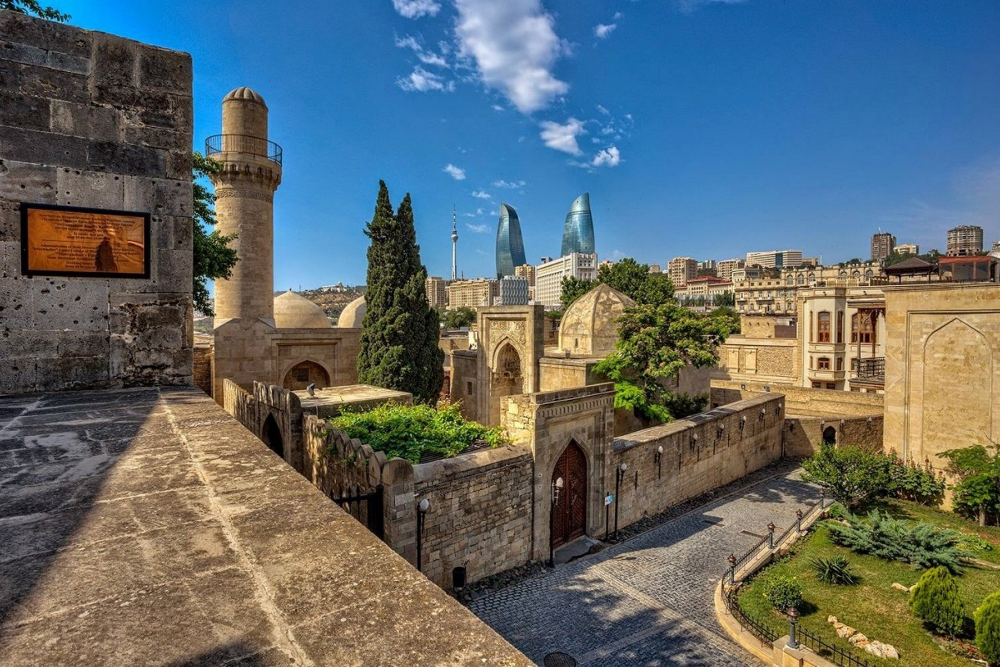
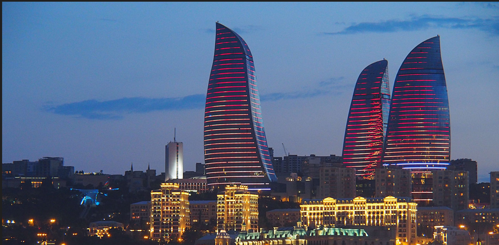
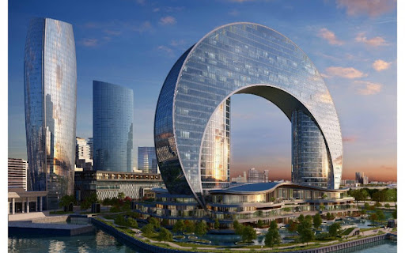
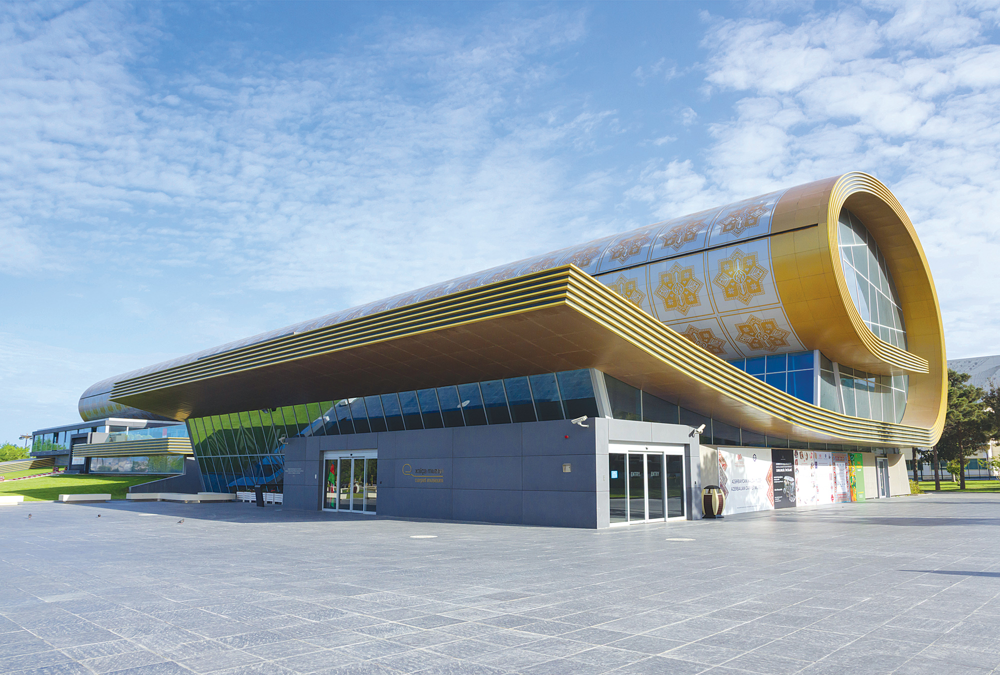
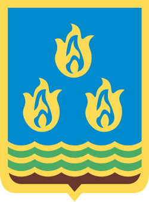

Odlar Yurdu Bakı
Xəzər dənizinin sahilində, keçmişin izləri ilə gələcəyin parıltısının birləşdiyi nöqtə. Mənim doğma şəhərim.
Şəhəri Kəşf EtGörməli Yerlər

İçərişəhər (İçerişehir)
Bakü'nün kalbi sayılan bu kadim kale duvarları, UNESCO Dünya Mirası listesinde yer almaktadır.
Daha fazla bilgi
Alov Qüllələri (Alev Kuleleri)
Şehrin her noktasından görülebilen bu kuleler, modern Bakü'nün simgesi haline gelmiştir.
Daha fazla bilgi
Dənizkənarı Bulvar (Sahil Bulvari)
Hazar Denizi boyunca uzanan, dünyanın en uzun bulvarlarından biri olan bir dinlenme merkezidir.
Daha fazla bilgi
Cresent Mall
Hazar Denizi kıyısında, hilal şeklinde inşa edilmiş modern alışveriş ve yaşam merkezi.
Daha fazla bilgi
Milli Xalça Muzeyi (Halı Müzesi)
Rulo halı şeklindeki benzersiz mimarisiyle Azerbaycan'ın zengin halı mirasını sergileyen müzedir.
Daha fazla bilgi
Heydər Əliyev Mərkəzi (Kültür Merkezi)
Zaha Hadid tasarımı olan, fütüristik ve akıcı çizgileriyle modern Bakü'nün kültür ve sanat merkezi.
Daha fazla bilgi
Bakü: Hazar’ın İncisi ve Rüzgarların Şehri
Azerbaycan’ın kalbi Bakü; Hazar Denizi’nin kıyısında, kadim İpek Yolu’nun mirasını modern dünyanın fütüristik çizgileriyle harmanlayan eşsiz bir metropoldür. "Rüzgarlar Şehri" olarak anılan bu büyüleyici başkent, bir yanda UNESCO koruması altındaki labirentvari İçerişehir sokaklarıyla geçmişin fısıltılarını taşırken, diğer yanda gökyüzüne yükselen Alev Kuleleri ile geleceğe göz kırpar. Şark’ın misafirperverliğini, Avrupa’nın estetiği ve Kafkasya’nın enerjisiyle birleştiren Bakü, her köşesinde farklı bir hikaye barındıran yaşayan bir müze gibidir.
- ✅ Kafkasya'nın en büyük megapolü
- ✅ Enerji Hattı: Stratejik petrol ve gaz merkezi.
- ✅ "Rüzgarlar Şehri": Hazar'ın en büyük liman ve sahil kordonu şehri
- ✅ Uluslararası Merkez: Formula 1 ve önemli enerji projelerinin ev sahibi